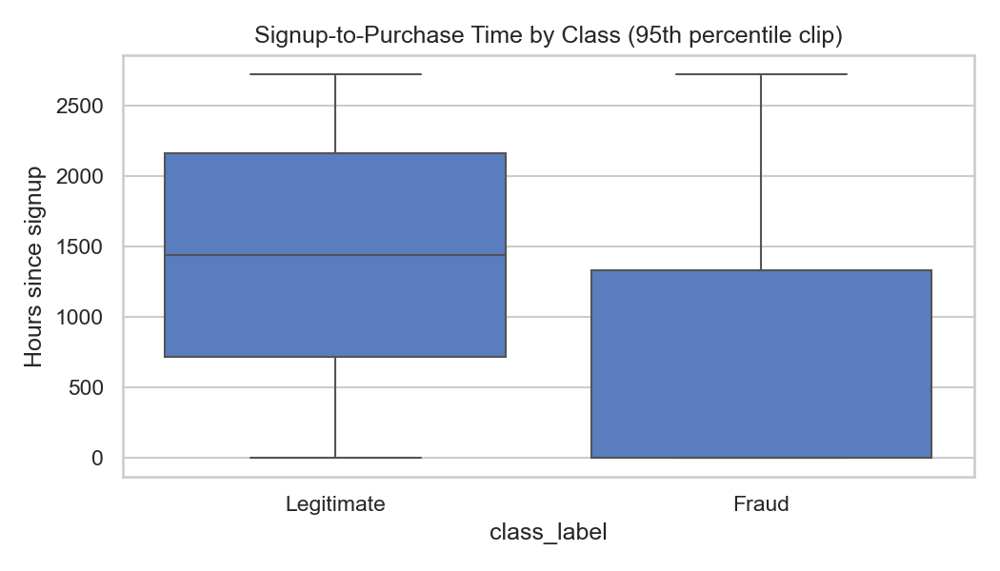
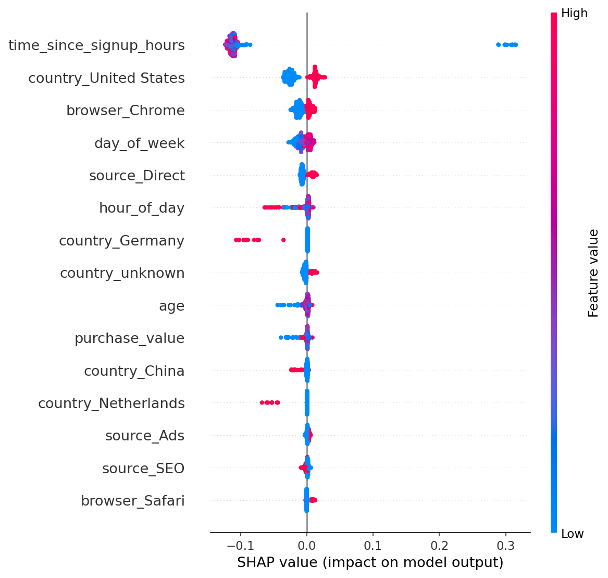
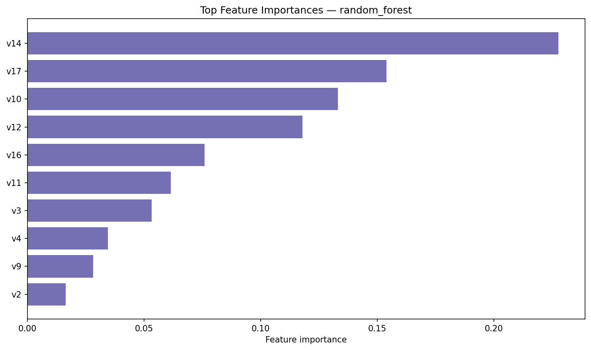
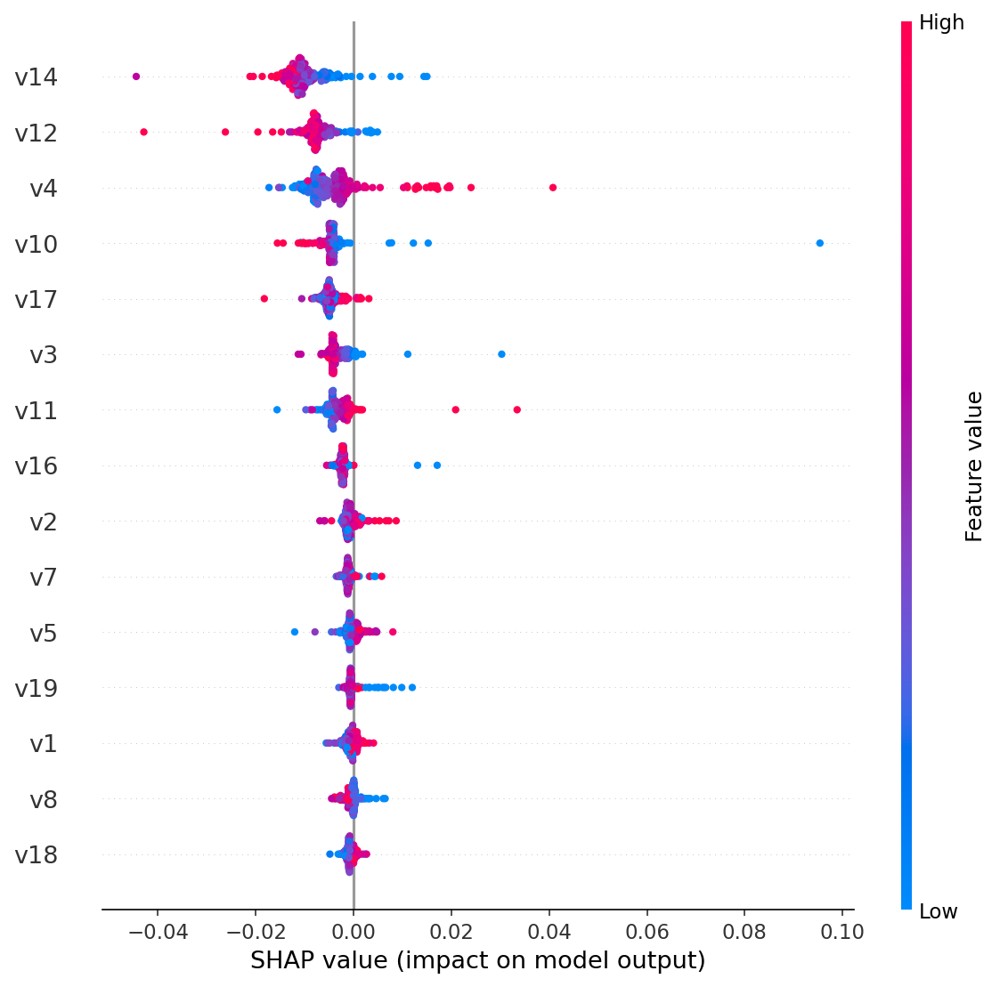

E-commerce
| PR-AUC | 0.625 |
|---|---|
| Precision | 99.1% |
| Recall | 52.7% |
| False positives | 13 / 30,223 |
| Top driver | time_since_signup_hours |
Portfolio case study · ML · Fraud risk
A unified machine-learning system that scores fraudulent transactions across e-commerce checkout and banking / card streams — with SHAP explainability and a review-first operating model.
Business problem
Merchants and issuers lose money to chargebacks and abuse, but auto-blocking creates false declines. This project builds a single risk-scoring framework for two very different data worlds — behavioral e-commerce logs (~9.4% fraud) and anonymized card PCA features (~0.17% fraud).
Holdout results
Same stack on both datasets: stratified split → SMOTE on train only → tune LR / Random Forest / XGBoost on PR-AUC → evaluate on untouched holdout.
| PR-AUC | 0.625 |
|---|---|
| Precision | 99.1% |
| Recall | 52.7% |
| False positives | 13 / 30,223 |
| Top driver | time_since_signup_hours |
| PR-AUC | 0.809 |
|---|---|
| Precision | 92.3% |
| Recall | 75.8% |
| False positives | 6 / 56,746 |
| Top drivers | V14 · V17 · V10 |
Methodology
Modular Python package, CLI scripts, 70+ tests, Streamlit dashboard, and stakeholder reports — built for auditability, not just a notebook demo.
Schema, duplicates, timestamps, geolocation enrichment
Temporal, velocity, one-hot encoding, PCA-ready card features
SMOTE on train only; holdout keeps natural prevalence
Grid / random search on PR-AUC for LR, RF, XGBoost
Feature importance + SHAP summary, bar, waterfall, dependence
Review-first alerts, cooldowns, monitoring recommendations
Evidence
E-commerce fraud clusters on near-instant signup-to-purchase. Card fraud separates on anonymized PCA components — SHAP ranks which ones move the score.




Key insights
Tech stack
Python package under src/, Streamlit dashboard, pytest suite, and GitHub Actions CI.
Medium-style final report with methodology, confusion matrices, SHAP plots, limitations, and recommendations — ready for PDF export.